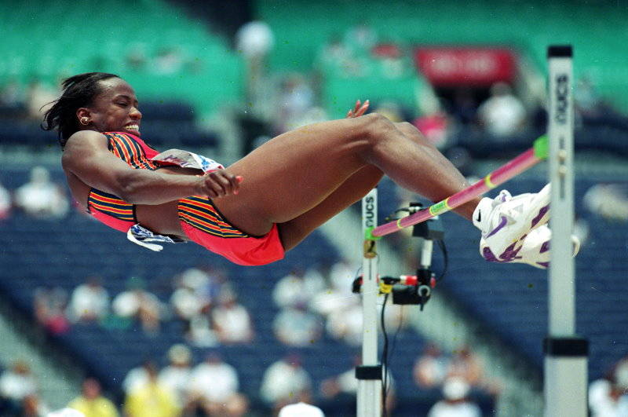

Jackie Joyner Kersee Competing in High Jump
| Event | JJK in 1988 | Personal Best | 1K Points |
|---|---|---|---|
| 100 m hurdles (s) | 12.69 | 12.61 | 13.85 |
| high jump (m) | 1.86 | 1.93 | 1.82 |
| shot put (m) | 15.80 | 16.00 | 17.07 |
| 200 m (s) | 22.56 | 22.30 | 23.80 |
| long jump (m) | 7.27 | 7.49 | 6.48 |
| javelin throw (m) | 45.66 | 50.08 | 57.18 |
| 800 m (s) | 128.51 | 128.51 | 127.83 |
It sounds bold to claim that Jackie Joyner Kersee is the absolute best female athlete, but
consider this: She competed in the heptathlon, a track and field event that combines scores from
seven different sports. She won two Olympic gold medals in heptathlon
(and a silver), and still holds the world record for greatest number of
points ever scored: 7,291.
How good was she? First, she competed in heptathlon, meaning she was Olympic caliber in 100m hurdles, 200m, 800m, high jump, long jump, javelin and shot put. Also, she won Olympic gold in long jump and two bronzes. Add to that two World Championship golds in heptathlon and two golds in long jump, and a long jump gold in the Pan American Games. She also played starting forward all four years of college at UCLA in basketball.
No One Better. But probably the most impressive fact about her abilities is that only two other women have ever been able to score more than 7000 points in heptathlon, Carolina Klüft (7032) of Sweden and Larisa Turchinskaya (7007) of the Soviet Union. For comparison, the table at right lists the seven sports of heptathlon, JJK's 7291-year (1988), her personal best, and the performance needed in each of the seven sports to earn 1000 points. (The scoring in heptathlon is bizarre.)
Inspiration Jackie Joyner Kersee has said in her autobiography A Kind of Grace that as a young girl she was inspired to be a versatile athlete by a movie about Babe Didrikson Zaharias, who was a track star, basketball player and pro golfer, and ironically, considered the All Time Best Female Athlete before JJK.